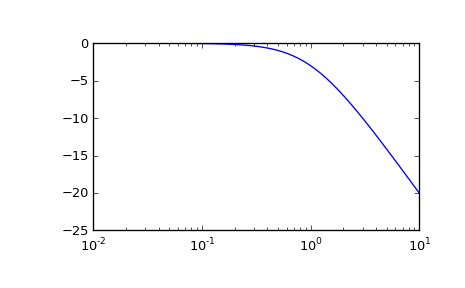

scipy.signal.bode¶
- scipy.signal.bode(system, w=None, n=100)[source]¶
Calculate Bode magnitude and phase data of a continuous-time system.
New in version 0.11.0.
Parameters : system : an instance of the LTI class or a tuple describing the system.
The following gives the number of elements in the tuple and the interpretation:
- 2 (num, den)
- 3 (zeros, poles, gain)
- 4 (A, B, C, D)
w : array_like, optional
Array of frequencies (in rad/s). Magnitude and phase data is calculated for every value in this array. If not given a reasonable set will be calculated.
n : int, optional
Number of frequency points to compute if w is not given. The n frequencies are logarithmically spaced in an interval chosen to include the influence of the poles and zeros of the system.
Returns : w : 1D ndarray
Frequency array [rad/s]
mag : 1D ndarray
Magnitude array [dB]
phase : 1D ndarray
Phase array [deg]
Examples
>>> from scipy import signal >>> import matplotlib.pyplot as plt
>>> s1 = signal.lti([1], [1, 1]) >>> w, mag, phase = signal.bode(s1)
>>> plt.figure() >>> plt.semilogx(w, mag) # Bode magnitude plot >>> plt.figure() >>> plt.semilogx(w, phase) # Bode phase plot >>> plt.show()
